La façade et les résultats
L'établissement vu depuis la Nationale 1, le portail, et les listes d'admis affichées à l'entrée après la session du Baccalauréat.
Photos
Cliquez sur une photo pour l'agrandir. Naviguez avec les flèches du clavier, fermez avec la touche Échap.
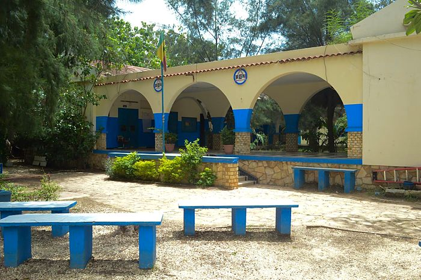
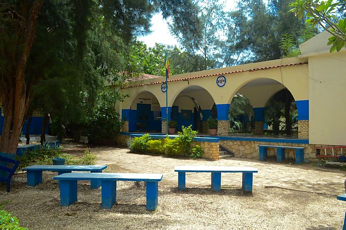
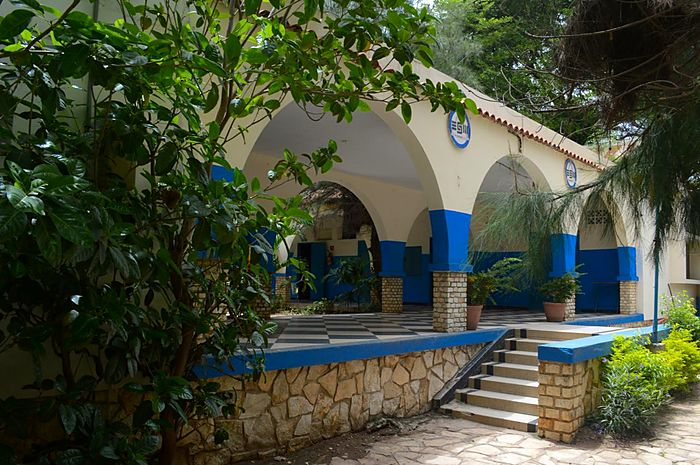
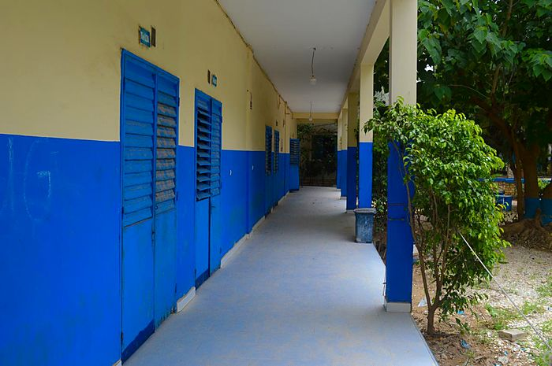
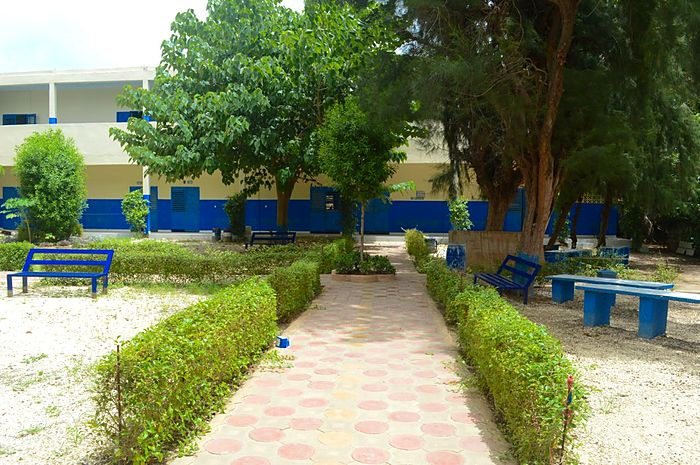
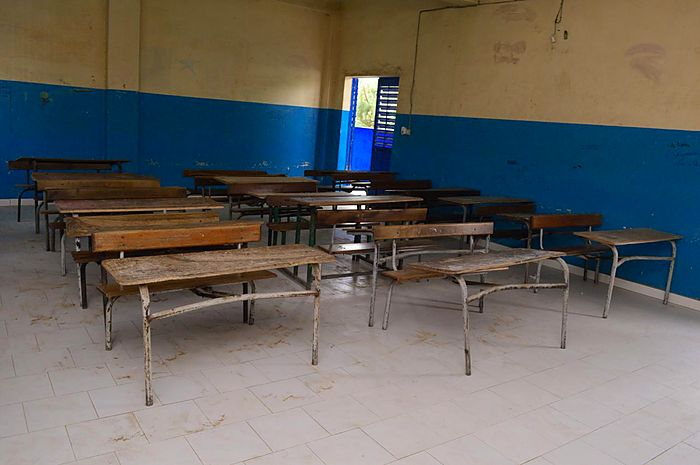
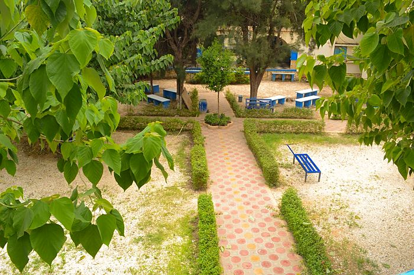
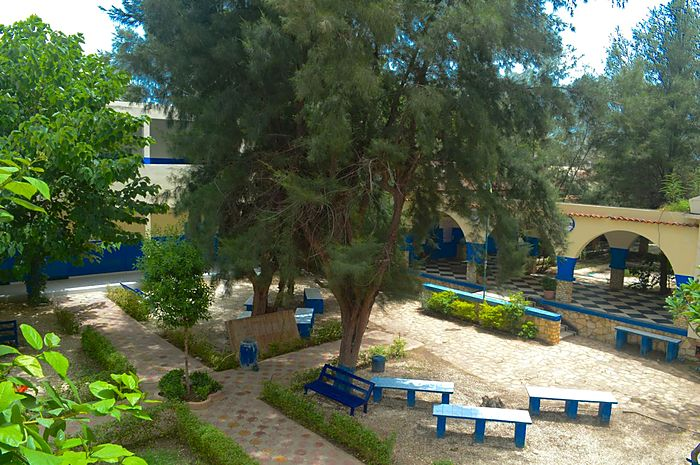
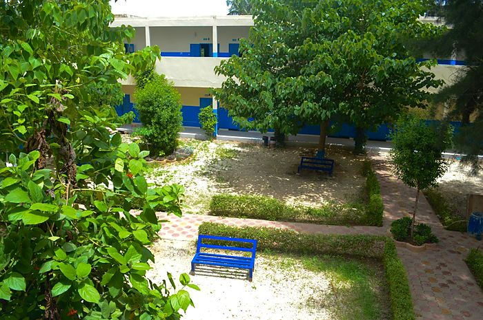
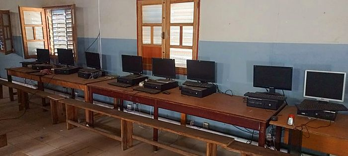
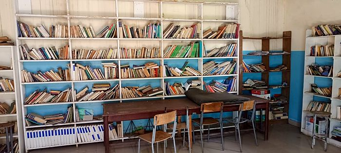
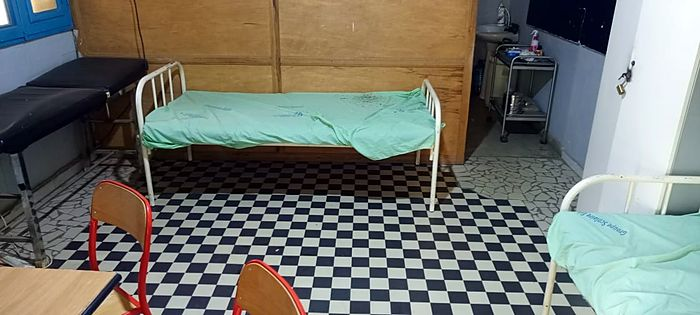
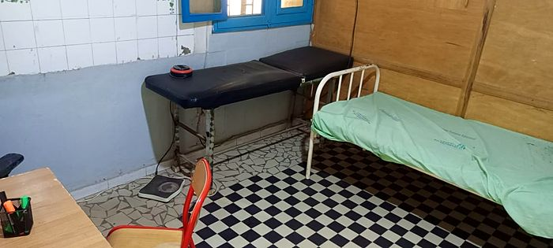
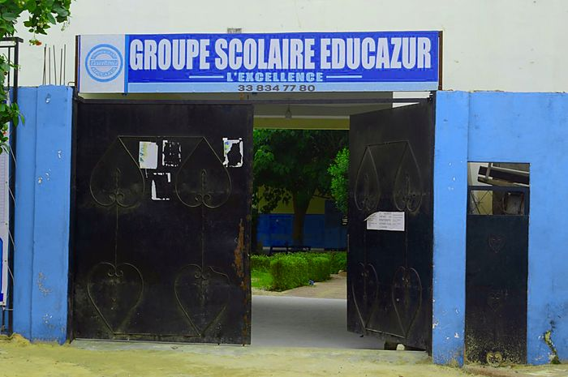
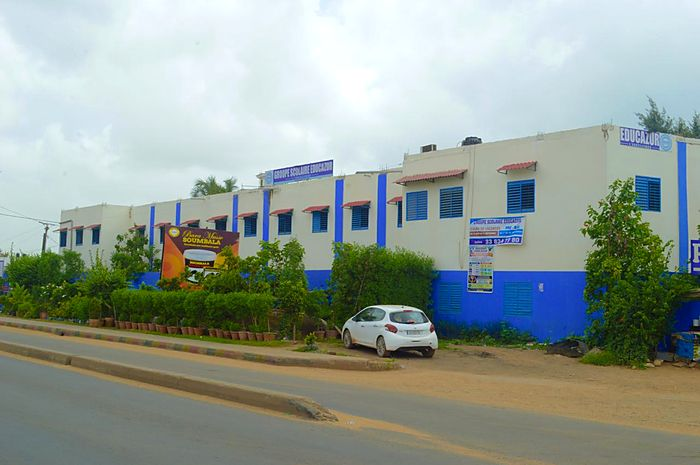
Vidéos
Neuf séquences tournées dans l'école, commentées en français. Les sous-titres sont disponibles depuis le bouton du lecteur.
L'établissement vu depuis la Nationale 1, le portail, et les listes d'admis affichées à l'entrée après la session du Baccalauréat.
Traversée de la cour et des allées couvertes, jusqu'à l'intérieur des salles de classe rénovées.
Le préau à arcades, les allées du jardin intérieur, les couloirs carrelés et l'infirmerie de l'établissement.
Les postes informatiques, alignés sur de longues tables : le numérique au service de l'apprentissage.
Rayonnages, tables de lecture et travaux d'élèves affichés au mur, dans une bibliothèque entièrement rénovée.
De la porte d'entrée aux lits de repos et à la table d'examen : l'infirmerie entièrement rénovée.
Les circulations intérieures, la surveillance et l'accès à l'administration.
Vue en plongée sur les haies taillées, les allées carrelées et les bancs du jardin.
Marche le long de l'allée centrale du jardin, en direction du préau.
Documents
Les documents affichés à l'établissement. Cliquez pour les agrandir.

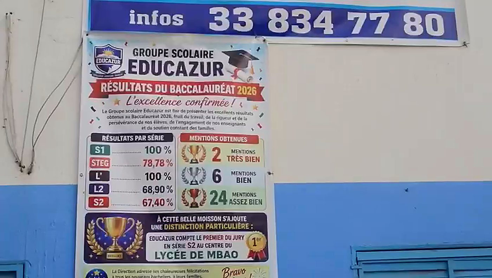
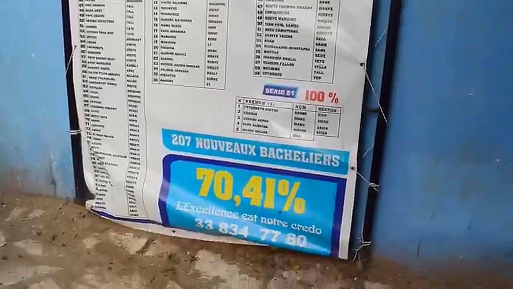
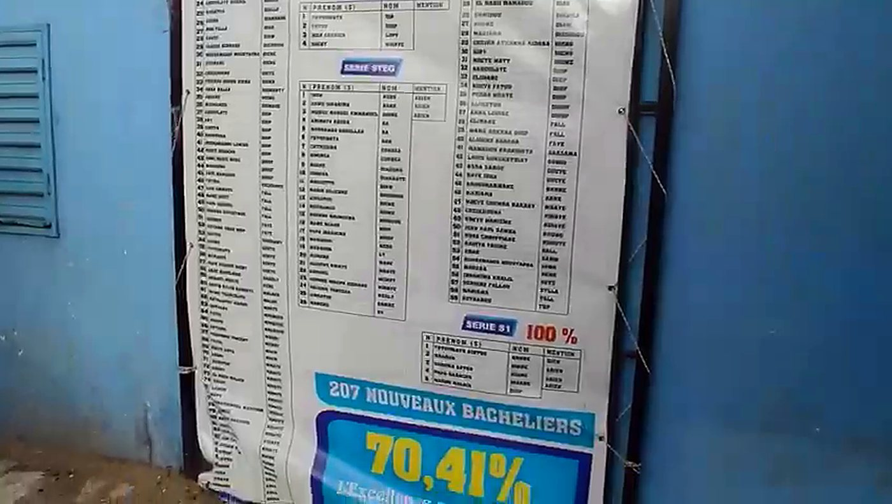
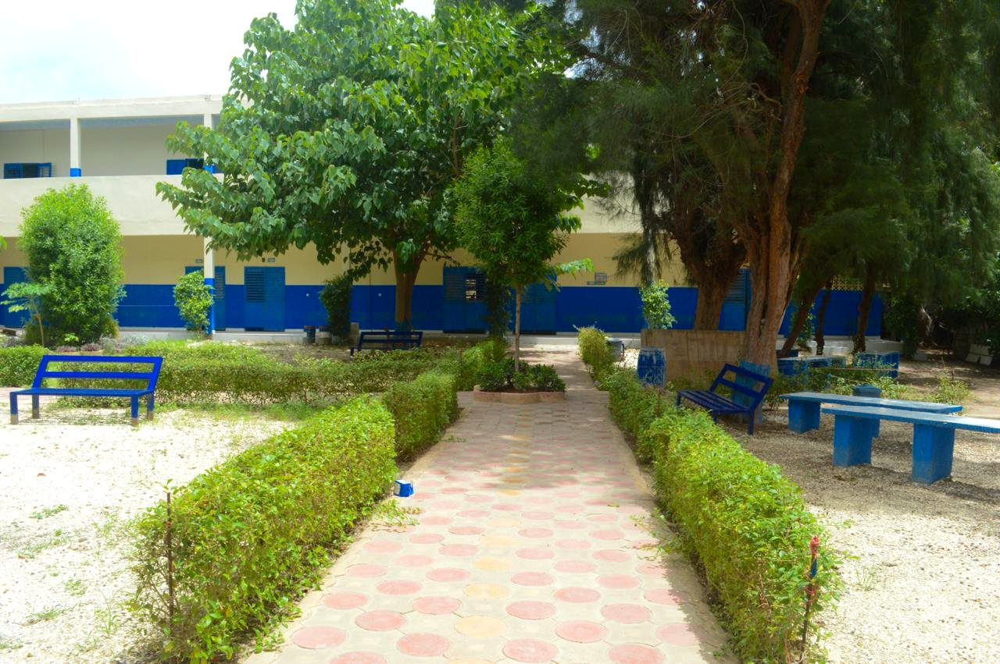
Venez nous voir
Le secrétariat vous accueille au Km 16, sur la Nationale 1, à Pikine.